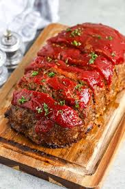

Meatloaf

Description
Delicious mixture of savory meat and sweet tomato sauce topping
Ingredients
- Ground Beef
- Ketchup
- Brown Sugar
- Salt
- Mustard
- Eggs
Steps
- Mix meat and all ingredients in a small mixing bowl
- Form into a large mound shape in a finely greased baking dish
- Top with ketchup and brown sugar mix, bake and baste every 20 minutes